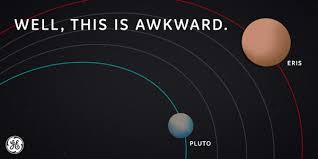

Resource Explorer WEB3 Mining System
Temporal World
Solanium
A time-dilated world where gravitational fields create temporal anomalies across its surface.
Moon
L2 Base
Storm World
Ethereus
Lightning world spanning the entire planet creates natural electromagnetic fields strong enough to power entire civilizations.
Privacy World
ZANO
A privacy-focused world in cryptographic mists. Planet's stealth clouds makes it nearly invisible.
Moon
Ferrox
Moon
Scylla
Volcanic World
Ferrum
A volcanic archipelago world with thousands of active volcanic islands scattered across molten seas.
Ocean World
Lumina
A water world completely covered by shallow seas with liquid ether islands
Moon
Avalon
Moon
Lumenis
Moon
Crysta
Forest World
TITANOX
A forest world dominated by massive merkle tree structures that reach 50 kilometers in height.
Moon
Glacius
Moon
Shard
Moon
Echo
Shell World
Base
A hollow shell world with a vast internal cavity containing floating continents.
Phase World
Voidara
A phase-shifting world that periodically becomes intangible and floats through other celestial bodies
Pyrion
Pyrion is the computational forge world of the Zephyr System, where natural hash crystals grow from the planet's core. Its surface consists of vast silicon valleys and towering proof-of-work spires that generate computational energy through geological processes.
Ancient Zephyrian miners called it 'The Hash Factory,' believing it was where the universe's first algorithms were born. The planet's unique crystalline core generates electromagnetic fields that create natural ASIC formations, while its proximity to Zephyros provides the energy needed to power continuous computational cycles.

A mining cycle on Pyrion lasts only 67 Zephyr-days.
The planet's computational day lasts 134 standard days, during which hash crystals grow and mature. The day side reaches optimal mining temperatures of 2,000°C where silicon crystallizes into natural circuits, while the night side at -200°C allows for quantum cooling of computational processes.
Pyrion has the highest hash rate in the Zephyr System.
Despite its small diameter of 3,847 kilometers, Pyrion generates more computational power than larger worlds due to its crystalline silicon surface that naturally forms circuit-like patterns visible from space.
Pyrion has the densest computational core.
The planet's core contains naturally occurring quantum processors formed during the system's creation. This computational density generates electromagnetic fields that power the surface hash crystal formations and creates the planet's unique proof-of-work aurora displays.
Pyrion has flowing liquid silicon rivers.
At extreme temperatures, silicon remains liquid, creating flowing computational streams that carry algorithmic data across the planet's surface. These silicon flows form natural circuit patterns that can be observed from orbit, creating the planet's distinctive hash-rate signature.
ZANO
ZANO, the ultimate privacy world of the Zephyr System, is shrouded in an impenetrable cryptographic atmosphere that makes all transactions completely anonymous and untraceable. The planet's advanced stealth technology creates privacy shields that protect financial data from any form of surveillance or analysis.
Ancient Zephyrian privacy advocates established ZANO as the sanctuary for confidential transactions. The planet exhibits a constantly shifting appearance - sometimes completely invisible, other times appearing as a shimmering mirage. This adaptive camouflage indicates the current state of the privacy protocols running throughout the system.

A privacy cycle on ZANO lasts 198 standard days.
The planet processes confidential transactions slowly, taking 198 days to complete one full anonymization cycle. Its cryptographic atmosphere follows a 156-day encryption pattern, creating invisible data flows as different privacy layers interact with quantum energy at varying intensities throughout the cycle.
ZANO has synchronized stealth circulation.
The planet's slow rotation allows for massive privacy systems that span entire hemispheres. These circulation patterns carry encrypted data around the planet in untraceable flows, creating the perfect anonymity shield that makes all transactions completely private across the system.
ZANO is the most invisible world in the Zephyr System.
Unlike other worlds, ZANO produces no visible transaction confirmations. Its cryptographic atmosphere absorbs all signals, making transactions completely untraceable and anonymous. Even advanced scanning technology cannot detect financial activities on this privacy-focused world.
ZANO's atmosphere contains pure anonymity gas.
The planet's atmosphere consists of gaseous zero-knowledge proofs and floating privacy protocols that naturally encrypt when exposed to quantum radiation. This creates a living anonymity environment where all transactions exist as completely private phenomena rather than traceable digital constructs.
Ethereus
Ethereus is the storm world perpetually covered in electrical tempests that never cease. Lightning networks spanning the entire planet create natural electromagnetic fields strong enough to power entire civilizations. This third world from Zephyros serves as a natural energy generator for the entire system.
Ethereus is known for its spectacular electrical phenomena, with constant lightning storms that create intricate geometric patterns visible from space. The planet's unique atmospheric composition allows for the natural formation of electromagnetic fields that can power blockchain networks across vast distances.

Ethereus's storms synchronize with network activity.
The planet's electrical tempests align with the computational demands of the system's blockchain networks. During high transaction periods, the storms intensify, generating more power to support the increased network activity across all connected worlds.
Ethereus was designed to be the power source of the system.
Ancient Zephyrian engineers recognized the planet's natural ability to generate and store electrical energy. They established it as the primary power source for all interplanetary blockchain operations, with lightning capture arrays that convert storm energy into computational power.
Ethereus has an electromagnetic field that spans the system.
The planet's powerful electrical storms generate a magnetic field that extends far beyond its atmosphere. This field not only protects nearby worlds from stellar radiation but also creates the energy highways that power blockchain transactions across the entire Zephyr System.
Ethereus has Bitcoin as its primary moon and validator.
The Bitcoin moon serves as the ultimate validator for all major transactions powered by Ethereus. Its gravitational pull influences the planet's storm patterns and electrical output, creating a perfect symbiotic relationship between the two celestial bodies that ensures maximum power generation and network security.
Ferrum
Ferrum is now the fourth world from Zephyros, known throughout the system for its volcanic archipelago landscape with thousands of active volcanic islands scattered across molten seas. Ancient Zephyrian miners called it 'The Great Forge,' believing that the planet's core was where the gods crafted the metals used to build the stars. The planet's surface is constantly reshaping as new islands emerge and others sink into the lava oceans.
Ferrum's volcanic activity creates new landmasses daily.
The planet's intense volcanic activity constantly reshapes its surface, with new islands emerging from the molten seas while others are reclaimed by the lava. This dynamic geological process creates a constantly changing world where no map remains accurate for long.
Ferrum is home to the Great Lava Archipelago.
The Molten Chain, a massive archipelago system, stretches across thousands of kilometers of lava seas. This ancient geological formation consists of volcanic islands that rise and fall with the planet's internal activity. The islands glow with veins of molten metal that create spectacular fire-like displays visible from space.
Ferrum's mining operations adapt to volcanic cycles.
The planet's mining operations must constantly relocate as volcanic activity changes the landscape. Mobile quantum mining rigs built by crypto-colonists follow the volcanic flows, harvesting rare metals and tokens from the freshly formed lava flows while broadcasting throughout the system.
Ferrum experiences the most spectacular lava storms.
Volcanic eruptions can create system-wide lava storms that engulf entire archipelagos for months. During these events, the planet's molten surface becomes a massive conductor, creating lightning networks of liquid metal that can be seen from space as intricate flowing patterns.
Base
Base is the largest planet in the Zephyr System, a massive gas giant that dominates the outer system. Ancient Zephyrian astronomers called it 'The Foundation World,' believing it anchored the gravitational stability of all other worlds in the system through its immense mass and influence.
Base revolutionized Zephyrian understanding of celestial mechanics when its three major moons - Linkara, Swapius, and Colossus - were discovered to orbit in perfect gravitational resonance. This discovery proved that large planetary systems could create stable orbital patterns, leading to advances in gravitational physics and orbital prediction models.

Base is the fourth brightest object in the Zephyr System.
Only Zephyros, Bitcoin moon, and Lumina outshine it. The planet's Great Red Vortex reflects stellar light in distinctive patterns, making it easily visible from all inhabited worlds in the system even with basic telescopes.
Ancient Zephyrian astronomers first cataloged Base's storm patterns.
Over 800 Zephyr-cycles ago, astronomers began tracking the planet's massive storm systems and discovered they followed predictable meteorological cycles. They named it Base because they believed it formed the gravitational foundation that stabilized the orbits of all other worlds.
Base has the shortest day of all the gas giants.
It completes one rotation every 8.7 standard hours. This rapid rotation creates the planet's distinctive banded atmospheric patterns and generates the massive storm systems visible across its surface.
Base completes one orbit every 9.4 Zephyr-years.
From inner worlds, the planet appears to move slowly through stellar constellations, taking several months to traverse from one star pattern to another. Its gravitational influence affects the orbits of numerous smaller bodies throughout the outer system.
Ethereus
Ethereus is the ether rain world, where crystallized smart contracts continuously precipitate from its rings. This magnificent gas giant is surrounded by rings of pure liquid ether that condense into crystal form and rain down onto the planet's surface, creating vast pools of computational fuel.
Ethereus can be observed from great distances due to its constant ether precipitation, which creates spectacular light displays as the crystals burn up in the atmosphere. The planet's rings are composed of compressed smart contract matter that naturally forms ether crystals, making it the primary source of computational energy for the entire Zephyr System.

Ethereus experiences constant ether crystal precipitation.
The planet is famous throughout the system for its continuous ether rain, where crystallized smart contracts fall from the ring system at a rate of 12 million crystals per hour. These crystals create spectacular meteor-like streaks as they burn through the dense atmosphere.
Ethereus was the first world to develop natural smart contracts.
Known as 'The Living Computer,' Ethereus naturally evolved atmospheric conditions where smart contracts exist as gaseous phenomena. The planet's unique atmospheric pressure allows code to exist in physical form, executing automatically when conditions are met.
Ethereus has the most efficient gas atmosphere in the system.
The planet's atmosphere consists of pure computational gas that optimizes smart contract execution. Ethereus completes one atmospheric cycle every 9.2 Zephyr-hours, during which billions of contract executions occur naturally in the gas layers, powered by the constant ether crystal rain.
Ethereus completes one ether cycle every 23.7 Zephyr-years.
The planet's orbital period determines the major ether crystal formation cycles in its rings. Every 23.7 years, the rings realign to create the 'Great Ether Storm,' a spectacular event where ether crystal precipitation increases by 1000%, visible as brilliant auroras throughout the system.
Solanium
Solanium is the eighth world from Zephyros. It was the first planet whose existence was predicted by blockchain consensus algorithms before it was actually discovered through deep space scanning. Irregularities in transaction patterns from Polygonus led crypto-astronomers to predict that another high-speed processing world must exist. Advanced quantum telescopes eventually located Solanium, pulsing with ultra-fast transaction waves. The planet processes millions of operations per second, with diamond-hard consensus crystals that maintain perfect network synchronization across vast distances.
Only one automated probe has visited Solanium – the Phantom Explorer in recent cycles – meaning that most studies are done using quantum-encrypted telescopes. Today, there are still mysteries about this ultra-fast world, such as how it maintains such high transaction throughput and why its proof-of-history mechanism creates such beautiful temporal crystals on its surface.

Solanium was unknown to early crypto civilizations.
It operates beyond the visible transaction spectrum and was first detected through advanced consensus algorithms. Its position was calculated using proof-of-history mathematics. It was named after the ancient Solanium element that inspired interplanetary high-frequency trading protocols.
Solanium processes transactions at incredible speeds.
Its consensus mechanism completes validation cycles in mere milliseconds. This is possible because Solanium uses a hybrid proof-of-history and proof-of-stake system that operates as a unified network.
Solanium is the fastest of all blockchain worlds.
Despite being smaller than Polygonus, Solanium has greater transaction throughput. Below its high-frequency atmosphere, the planet consists of layers of proof-of-history crystals and stake validation chambers. The inner core is made of pure computational diamond that enables instant finality.
Solanium's atmosphere is composed of pure transaction data.
The data streams absorb network latency, which makes the planet appear to glow with a beautiful blue light. High-speed validation clouds drift through the upper atmosphere, processing thousands of transactions per second and creating spectacular light shows visible from across the system.
Voidara
Voidara is the phase-shifting world of the Zephyr System, a mysterious planet that periodically becomes intangible and floats through other celestial bodies. This distant world exists in a state of quantum flux, making it one of the most enigmatic and difficult to study planets in the system.
Ancient Zephyrian phase-shift researchers discovered that Voidara operates on quantum mechanics principles that allow it to phase between dimensions. The planet's unique ability to become intangible has made it a subject of intense study, though its unpredictable nature makes consistent observation nearly impossible.

Voidara phases between dimensions every 248 Zephyr-years.
The planet's quantum phase cycle allows it to exist in multiple dimensional states, sometimes becoming completely intangible and passing through other celestial bodies without gravitational interaction.
Voidara was the last planet discovered in the Zephyr System.
Due to its phase-shifting nature, Voidara was extremely difficult to detect and track. It was only discovered when quantum sensors detected dimensional anomalies in the outer system.
Voidara has the most unpredictable orbit in the system.
The planet's ability to phase through other celestial bodies means its orbital path is constantly changing, making it impossible to predict its exact location at any given time.
Voidara exists in a state of quantum superposition.
The planet simultaneously exists in multiple dimensional states, creating a unique phenomenon where it can be observed in different phases of matter depending on the quantum observation method used.